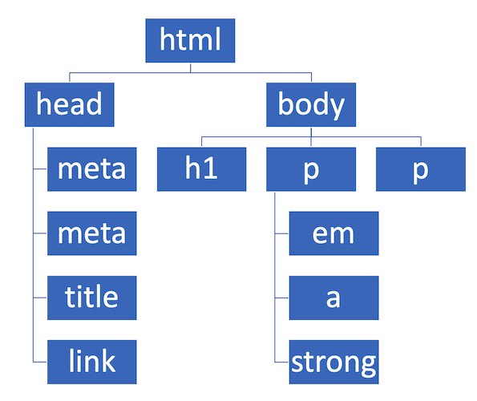
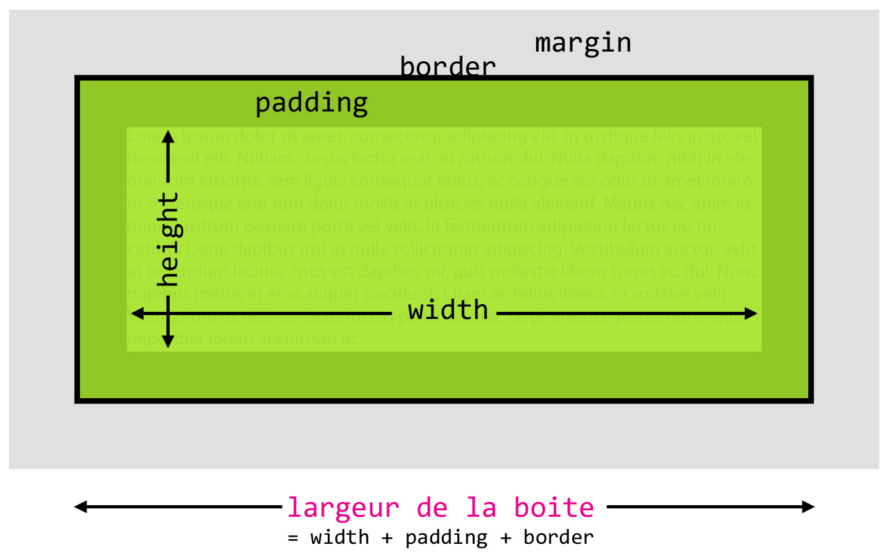
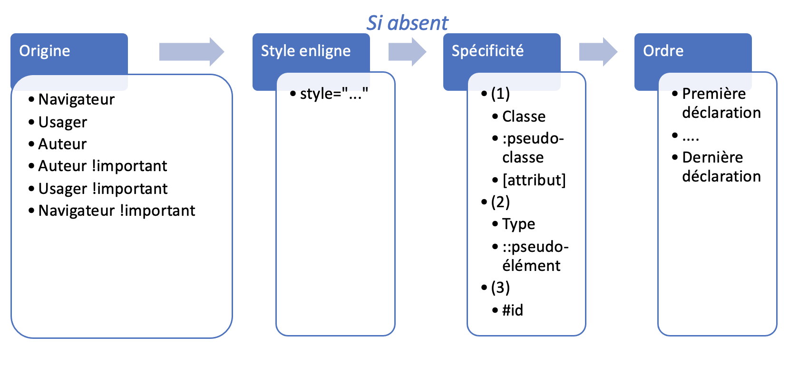

TCH056 - Programmation Web
Chapitre 03: CSS
Anis Boubaker, Ph.D.
Prof. Enseignant en informatique
Plan du chapitre
CSS: Cascade Style Sheet
- Feuille de style en cascade
- Langage permettant de définir l'apparence (le style) des éléments d'un document HTML.
- On s'intéresse à la présentation de la page WEB et non à son contenu/sémantique, ni à son comportement
- Plusieurs styles (règles) peuvent s'appliquer "en cascade" au même élément HTML: l'algorithme de cascade lève l'ambiguïté
Découplage entre le contenu et le visuel
Naviguez vers le bas pour voir la démonstration du site csszengarden.com
Notion de règle (en général)
- La programmation à base de règles est un des paradigmes de programmation.
- Un programme est écrit sous la forme d'un ensemble de règles (la base de règles)
- Une règle a deux parties: la partie gauche ou la condition, et la partie droite ou l'action:
Condition => Action
- À un instant t, si la condition d'une règle est vérifiée, son action est alors exécutée.
Les règles CSS
Une règle CSS se compose de deux parties:
- Le sélecteur: Qui identifie les éléments auxquels s'applique une règle
- La déclaration: Qui définit le style à appliquer aux éléments sélectionnés
Exemple de règle CSS
Exemple de règle CSS
Carvel
Carvel est un hameau en Alberta, dans le centre de la province.
Sa population est estimée à environ 19 habitants (recensement de 2019) et son indicatif régional est le 780.
Où placer le code CSS?
Trois possibilités, seule la dernière est recommandée:
- Directement dans l'élément HTML concerné, via l'attribut style (pas de sélecteur)
- Règles internes, dans une balise d'en-tête style
- Dans un fichier .css séparé, inclus avec une balise link
Où placer le code CSS?
Trois possibilités, seule la dernière est recommandée:
- Directement dans l'élément HTML concerné, via l'attribut style (pas de sélecteur)
- Règles internes, dans une balise d'en-tête style
- Dans un fichier .css séparé, inclus avec une balise link
Où placer le code CSS?
Trois possibilités, seule la dernière est recommandée:
- Directement dans l'élément HTML concerné, via l'attribut style (pas de sélecteur)
- Règles internes, dans une balise d'en-tête style
- Dans un fichier .css séparé, inclus avec une balise link
Plan du chapitre
Rappel: Arborescence HTML
Le Document Object Model
- Le navigateur stocke les éléments d'une page Web sous forme d'arborescence en mémoire
- Cette représentation permet au navigateur d'analyser et de traiter le contenu la page en vue d'en faire le rendu à l'écran
- Cette représentation mémoire de l'arborescence des éléments HTML d'une page est ce qu'on appelle le DOM (Document Object Model)
- Le DOM est accessible aux développeu.rs.ses pour cibler des éléments de la page (en CSS et en Javascript)
CSS et DOM pour le rendu

Source: Site MDN
Utilisation de l'arborescence
- Dans une arboresence, chaque élément (noeud) est l'enfant d'au plus un autre noeud, et est le parent de 0 ou plusieurs enfants
- Deux cas particuliers:
- La racine: le seul noeud qui n'a pas de parent
- Les feuilles: qui n'ont aucun enfant
- D'autres types de relations peuvent être exploitées (et qui nous serviront): les ancètres, les descendants, les frêres
Racine et Feuilles
Descendants et ancètres
Frères (siblings)
Identification des éléments (1/2)
- Tout élément HTML peut avoir un identifiant unique
- L'identifiant est spécifié à travers l'attribut id:
Identification des éléments (2/2)
- Tout élément HTML peut aussi appartenir à une catégorie ou classe d'éléments
- La classe est spécifiée à travers l'attribut class:
- Généralement, plusieurs éléments sont dans la même classe.
- Un élément peut avoir plus d'une classe, séparées par des espaces:
Plan du chapitre
Rappel: Règle CSS
- Le sélecteur: Partie qui définit à quel(s) élément(s) s'appliquera la règle
- La déclaration: Règles de style qui seront appliquées aux éléments sélectionnés
Sélecteurs de base (1/3)
- Sélecteur universel (*):
- Sélection par type:
Sélecteurs de base (2/3)
- Par identifiant:
Sélecteurs de base (3/3)
- Par classe:
Sélecteurs combinés: Listes
- Liste de sélecteurs: définie à l'aide de l'opérateur virgule (,)
- Les éléments répondant à au moins un des sélecteurs seront affectés:
Sélecteurs combinés: Descendants
- A B: Sélectionne tous les éléments sélectionnés par B qui sont un
descendant d'un élément sélectionné par A.
Sélecteurs combinés: Enfants
- A > B: Sélectionne tous les éléments sélectionnés pas B qui sont un
enfant (direct) d'un élément sélectionné par A.
Sélecteurs combinés: Frère adjacent
- A + B: Sélectionne tous les éléments sélectionnés par B qui:
- Ont le même parent qu'un élément sélectionné par A; et
- Qui suivent directement l'élément sélectionné par A dans l'arbre.
Sélecteurs combinés: Frère antérieur
- A ~ B: Sélectionne tous les éléments sélectionnés par B qui
- Ont le même parent qu'un élément sélectionné par A; et
- Qui viennent après l'élément sélectionné par A dans l'arbre.
Sélection par attribut
La sélection se base sur un attribut spécifique et sa valeur:
→ Consulter les différents opérateurs sur le site MDN.
Pseudo-classes
- Une pseudo-classe identifie un état particulier d'un élément.
- La pseudo-classe est ajoutée à la suite du sélecteur, en les séparant par un :
- Liste complète sur le site MDN
Pseudo-éléments
- Un pseudo-élément vise à sélectionner une portion de l'élément sélectionné.
- Le pseudo-élément est ajouté à la suite du sélecteur, en les séparant par un ::
- Liste complète sur le site MDN
Sujet d'un sélecteur
Dans le cas d'un sélecteur combiné: Ce sont toujours les éléments correspond à la partie la plus à droite du sélecteur qui seront sélectionnés!
Dans l'exemple ci-dessus, seuls des éléments A seront sélectionnés. Il faudra toutefois qu'ils soient descendants d'un LI qui lui même est un descendant direct d'un UL
Plan du chapitre
Déclarations de style
- Une déclaration de style est un ensemble de paires de clé-valeur, encapsulées entre des { } et séparées par des ;
- Clé: Élément de style à altérer
- Valeur: La valeur définissant l'apparence désirée
Stylage du texte (1/2)
Ensemble de déclarations permettant de modifier l'apparence du texte, tels que:- La police: Voir: https://www.cssfontstack.com
- La taille:
- La couleur:
- Le style:
- Consulter le site MDN pour connaitre les principaux éléments de styles du texte.
Stylage du texte (2/2)
D'autres références associées aux déclarations de style du texte:
Le modèle en boite
Le rendu des éléments à l'écran s'effectue de deux manières:
- En ligne: À la suite de l'élément qui le suit (le texte, les liens, les span, ...)
- En boite: Le contenu est encapsulé au sein d'une boite englobante qui se détache (par défaut) du flux normal du contenu (i.e. revient à la ligne)
- Il est possible d'altérer le style par défaut en modifiant la propriété display: inline ou block:
- Il existe d'autres valeurs possibles pour la propriété display que nous verrons dans la section Positionnement.
Le modèle en boite
Structure d'une boite
Soucre: Vincent De Oliveira, Formation Microsoft tech-days 2014
Stylage de boites
- Nous pouvons agir de façons indépendante sur chaque constituante de la boite:
Valeurs CSS
- Chaque déclaration CSS comporte une valeur.
- La valeur peut être de plusieurs types (même pour la même propriété!)
- Un type de valeur donné doit être utilisé dans le contexte approprié
Ex.: Il n'est pas possible de mettre une valeur de type image pour spécifier la taille d'une marge...
Types de valeurs
- Numérique:
50px, 5cm, 1.5em, 3rem, 10vh, 20% - Couleur:
darkblue, #12a4b7, #faf, rgb(109, 234, 234), ... - Image:
background-image: url(../images/logo_ets.png) - Position:
center, left, right, middle, ... - Chaines de caracteres:
content: "Bizarrerie de CSS" - Fonctions:
width: calc(100px + 20%)
Nous allons nous intéresser spécifiquement aux valeurs numériques de taille et aux couleurs. Pour une référence complète, voir le site MDN.
Les unités de taille
- Une taille peut-être:
- absolue: valeur numérique sans dépendance (ex.: cm, in, px), ou
- relative: valeur dépendant d'une autre valeur (typiquement du parent).
- L'unité utilisée détermine le type de longueur
Unités absolues
- Pixel (px): unité de base d'un écran.
- Pouces (in): On assume que 1 in = 96px
- Centimètres (cm): 25.2/64in = 37.8px
- Millimètre (mm): 1/10cm = 3.78px
- Point (pt): 1/72 in
- Picas (pc): 1/6 in
Unités relatives
- %: Pourcentage de la taille (totale) du parent.
- em: Taille de la police du parent.
- rem: Taille de la police de la racine (html)
- vh: 1% de la hauteur de la partie visible de l'écran
- vw: 1% de la largeur de la partie visible de l'écran
- fr: Unités fractionnaires de l'espace encore disponible du parent (voir Grid Layout)
Couleurs
- Nommées: yellow, red, ... liste disponible sur MDN.
- Hexadécimal:Valeur du Rouge, Vert et Bleu, sur deux digits hexa chacun (#xxxxxx)
- RGB: En utilisant la fonction rgb() et en passant des valeurs décimales pour le rouge, vert et bleu.
- RGBA: Comme RGB mais avec un 4e paramètre qui représente l'opacité (0: opaque, 1: transparent)
Héritage
- En CSS, l'héritage contrôle l'apparence d'un élément lorsqu'aucune valeur n'a été spécifiée
- Les propriétés CSS sont soit:
- Héritables: Sa valeur est définie, par défaut, à la valeur calculée du parent
- Non-héritables: Sa valeur est définie, par défaut, à la valeur initiale de la propriété
Propriétés héritées
Cest est une démonstration de l'héritage.
Propriétés non-héritées
Cest est une démonstration de l'héritage.
Altérer l'héritage
Cest est une démonstration de l'héritage.
- La propriété all peut être utilisée si on souhaite modifier le mode d'héritage de toutes les propriétés dans une déclaration. Voir la syntaxe ici.
Plan du chapitre
Motivation
- Un document peut inclure plusieurs feuilles de style CSS, des éléments peuvent avoir des style enligne
- D'autres feuilles de style sont utilisées, en plus de celles créées par la personne qui développe le site (navigateur, préférences personnelles)
- Il est fréquent que, pour un élément donné et une propriété donnée, plusieurs valeurs s'opposent
- Quelle valeur choisir? ⇨ Algorithme de cascade
Algorithme de cascade
Plan du chapitre
Implémentation d'un positionnement Flex
Définir la direction
D'autre valeurs possibles: row-reverse et column-reverse